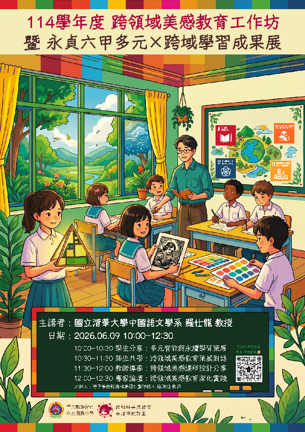

永貞國小114
跨領域美感教育成果展
【美數．數美】幾何與比例的跨領域探索
從蒙德里安的純粹色塊出發，躍升至謝爾賓斯基四面體三維光影；將頭份在地蘆竹湳古厝磚櫺轉譯為版畫文化印記，融入 SEL 情緒調色盤與 SDGs 永續關懷。帶領孩子以理性的數理之眼欣賞世界，以感性的美感視角雕琢生命。
從蒙德里安的純粹色塊出發，躍升至謝爾賓斯基四面體三維光影；將頭份在地蘆竹湳古厝磚櫺轉譯為版畫文化印記，融入 SEL 情緒調色盤與 SDGs 永續關懷。帶領孩子以理性的數理之眼欣賞世界，以感性的美感視角雕琢生命。

「美數．數美」創課方案以藝術為核心，橫跨數學比例、幾何空間、社會文化與社會情緒學習（SEL）。打破學科界線，賦予孩子跨界整合的創意思辨力。
從自然界隱藏的費氏數列（Fibonacci sequence）切入，連結蒙德里安的純粹垂直水平分割；再進階至謝爾賓斯基三角形（Sierpinski triangle）的碎形規律，完成正四面體光影夜燈的三維展開。
立足家鄉頭份，帶領孩子走讀三百年歷史的蘆竹湳三合院聚落。將古厝窗櫺、紅磚砌法、西瓜石意象轉譯為幾何版畫凸版，透過日本色紙版畫的多重工序拓印，凝結六年國小韶光。
實踐「自我覺察」與「修補美學」，引導學生面對對位失誤與紙張破裂時不輕言放棄，而是在試誤中展現心理韌性；小組共創圍繞「酸甜哀怒」情緒主題，呼應 SDG 4 優質教育與 SDG 11 永續城鄉。
114學年度創課方案4.2版採取螺旋式架構，從 114-1 的平面秩序與色彩覺察，躍升至 114-2 的三維立體結構與複序版畫工藝。
透過觀察校園樹木與建築，掌握寒暖、明暗、對比與相近四種配色法，以點狀與規律排線模擬材質。
藉由鳳梨與松果認識費氏數列，在方格紙上劃分黃金矩形，模仿蒙德里安紅黃藍純粹色塊與黑色界線。
結合頭份古厝萬字紋與幾何線段，利用卡典西德剪割貼膜並以黑邊勾勒鉛條，貼於窗櫺隨陽光投射出斑斕光影。
由平面幾何躍升至立體空間，計算碎形規律繪製展開圖，組裝透光卡典西德與LED燈座，在暗室投射璀璨星芒。
走讀校本古厝聚落，將巷弄造型與西瓜石轉譯為對稱凸版；掌握和紙噴水、報紙吸水與馬連加壓等嚴謹版畫工序。
正式簽署作品名稱與版次編號（Edition），小組圍繞「酸甜哀怒」共創；化身策展人自主分工籌辦畢業成果盛典。
完整收錄 330+ 件原創作品與歷程紀錄（含卓越領航小發表與跨域美感教育季成果專區）。已全數排查剔除重複圖片與 QR Code，確保極致純粹的視覺藝術饗宴。
從 2025 年秋季至 2026 年初夏，見證孩子在數藝交會點上的每一步蛻變。
探討大腦對美的渴求，觀察永貞校園樹木與暖色建築的色彩對比，引進風格派大師蒙德里安垂直水平幾何構思。
將自然界鳳梨與松果的數列規律轉化為方格紙上的空間分割，以純粹紅黃藍三色進行著色，建立數學邏輯骨架。
學習黑色膠條封邊技術模擬傳統彩繪玻璃鉛條，將作品張貼於教室透光窗戶，在自然光下觀察流動的光影畫作。
挑戰碎形幾何思維，由二維卡典西德展開圖折疊組裝成正四面體立體燈罩，在暗室點亮LED燈，映照出空間碎形之美。
校本走讀頭份三合院古厝，將磚櫺線條與西瓜石轉化為版畫凸版；以和紙噴水、報紙吸濕與馬連加壓，完成專業落款。
手作永不凋謝的感恩立體花束；六年甲班小藝術家自主分工，規劃展位陳設、導覽台詞與多媒體影音測試。
清華大學中文系羅仕龍教授親臨指導，全校親師生熱烈觀摩，小藝術家自信導覽，跨領域美感種子在永貞深根茁壯。
徐秉鴻老師深情記錄永貞六甲太空主題班服與榮耀獎盃🏆。當幾何遇上美感，孩子們親手打造的幾何立體燈飾綻放璀璨光芒，彩繪幾何窗花宛若教堂星空灑落教室；凝聚親師生與行政團隊無私支持，見證孩子自主探索與跨界實踐的閃光旅程。
鍾校長與策展團隊於社群專題發表「美數．數美」幾何與比例探索歷程，紀錄清華大學羅仕龍教授蒞校指導實況、星際導航格點窗花、宇宙密碼夜燈與蘆竹湳版畫之完整教學實踐。
徐秉鴻老師代表永貞國小團隊發表「美數．數美」跨域歷程，上午分享小組對話思維鷹架；中午體驗「望見書間」移人故事與越式芭蕉葉美學長桌；下午實踐古典藍晒工藝（Cyanotype），以植物蕨葉顯影與金墨勾勒普魯士藍深邃層次，滿載教育活水。
美感教育不僅是技能的習得，更是一場關於自信、情緒釋放與自我認同的生命旅程。
從四面體光影流轉到美術館當代參訪，感受孩子動態創作現場的專注與活力。
美感教育團隊徐秉鴻老師、彭仁星老師、黃欣怡老師與鍾瑞蓉校長的課程深度省思與未來展望。
學生過去在數學課面對數列與幾何公式，往往停留在純粹運算與符號解題層次。但在「美數．數美」中，當費氏數列化為蒙德里安的黃金矩形，當謝爾賓斯基三角形轉為可折疊的三維立體燈罩時，孩子親眼目睹數學原來是構築世界秩序與空間美感的終極工具。
立體卡典西德拼貼與版畫拓印是極考驗精準度的工藝，學生常因厚度對位或裁切失誤出現透光縫隙。這正是絕佳的教育契機：引導學生不急於揉掉重做，而是思考利用剩餘材料進行「鑲嵌式修補」。美感不追求無瑕疵的完美，解決問題的韌性本身就是最動人的創造。
結合永貞校本走讀，我們將頭份蘆竹湳古厝的三合院紅磚與西瓜石帶入課堂。孩子在剪黏與拓印時，不僅僅是學習造型與套色技術，更是在轉譯故鄉歷史記憶；小組圍繞「酸甜哀怒」創作，讓藝術轉化為離別之際的情感宣洩與生命印記。
「美數．數美」已在永貞國小建立了穩健且可推廣的模組範式。小學畢業不是終點，期盼這群六年甲班的孩子帶著這雙兼具「數學理性邏輯」與「藝術感性審美」的雙眼邁向國中與未來人生，成為富含文化底蘊與關懷思維的世界公民。
本展覽網站依規範全面執行個人隱私移除、重複圖檔排查與 QR Code 移除工序。
依據展示要求，針對「下載」中「永貞國小2025-2026跨領域美感教育卓越領航計畫」原始目錄共 585 筆資料完成系統化安全篩檢與備份維護。
經正則表示式全域掃描全部文本、PDF 與檔案名稱，個人手機號碼與電子信箱均已完全排除，零個資殘留。
採用 MD5 雜湊與 64 位元感知雜湊（dHash）交叉核對，精確識別 3 組重複圖檔，每幅作品僅保留 1 份高品質原件。
運用 jsQR 逐像素演算法與檔名篩檢，完整偵測出 19 筆純 QRcode 條碼圖片，全數移除並安全移入備份目錄。